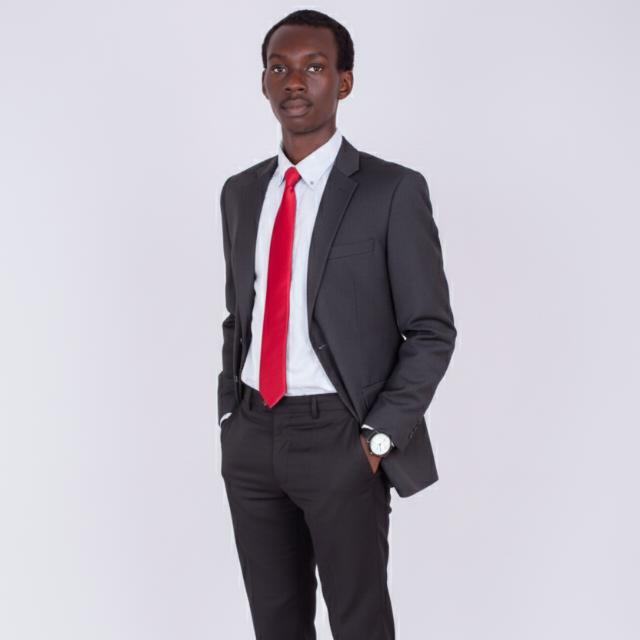

I'm Vincent Nganga — a Computer Science student, teacher, and community organiser who believes the best technology is the kind that quietly makes someone's day easier. I build with AI, Python, and the web, and I'm always looking for the next small problem worth solving.

My story
My interest in tech didn't start with a computer — it started with noticing problems. Teaching showed me how much time gets lost to repetitive, avoidable work: rewriting the same kind of exam, formatting the same kind of notes, chasing information that should've been one click away. Running a school journalism club showed me the same thing on a different scale — a small team can produce real, consistent work if the process around them is designed well.
Studying Computer Science gave me a way to actually build the fixes I kept imagining instead of just working around the problem. I'm particularly drawn to AI and data science, not as buzzwords, but as practical tools — the kind that can help a small community organisation understand its own data, or help a teacher spend less time on paperwork and more time teaching.
That's the thread running through everything I do: find a real, everyday problem — in a classroom, a club, a community — and build something small and useful that actually solves it.
Most of the problems people deal with day to day aren't solved by cutting-edge research — they're solved by someone bothering to build the small, unglamorous tool that removes friction. A well-placed Python script, a simple web app, or a model that spots a pattern a person would've missed can save a school, a club, or a household real time and stress. I want to keep building things at that scale: practical, close to the ground, and genuinely useful to the people around me.
Experience
Coursework alongside a growing focus on AI, data science, and web development — building projects outside class whenever I can.
Projects
A student journalism club I founded and lead — built from the ground up into a functioning newsroom with editorial standards, a publishing rhythm, and a recognisable brand.
A new project is in the works. Check back soon for something built with AI and Python.
A web-based project is on the way. This space will be updated as it takes shape.